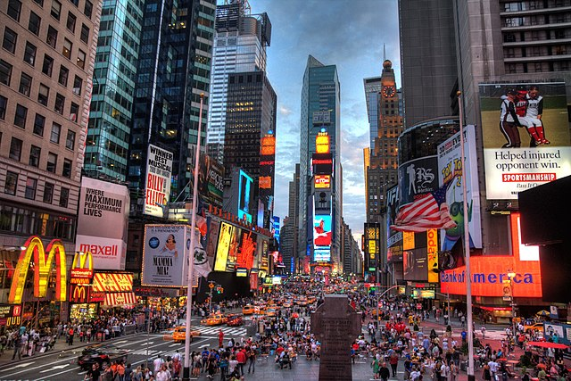
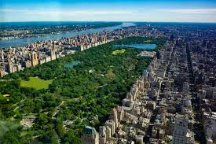

New York City, New York
New York City is often referred to as the city that never sleeps and "The Big Apple". It is a city that is very vibrant and exciting when visiting it. New York City is located in the northeastern United States, in the state of New York. It is one of the biggest cities in the United States, along with being the most populated city with a population of 8.46 million people. New York City is divided into five boroughs: Manhattan, Brooklyn, Queens, the Bronx, and Staten Island. Each borough has something unique to offer. In Manhattan, it is home to many famous tourist attractions. In Brooklyn, it is known for its vibrant neighborhoods and cultural diversity, and offers visitors a taste of authentic New York City life. In Queens, it is the most ethnically diverse urban area in the world, and has a multiculturalism of different cultures and cuisines. The Bronx, known as the birthplace of hip-hop, home to the Bronx Zoo, and the Yankee Stadium, offers visitors a mix of cultural attractions and different outdoor adventures. Staten Island is well known for its greenery and park spaces, different museums, and historical buildings. Overall, New York City is a special city that provides a wide range of many towering skyscrapers, historic landmarks, tourist spots, and many green spaces.
New York City's economy stands as one of the most robust and dynamic in the world, serving as a global hub for finance, commerce, culture, cuisine, and innovation. Its iconic skyline is enhanced with towering skyscrapers housing the headquarters of many different multinational corporations, financial institutions, and tech giants. It is very famous for its Broadway theaters, fashion such as New York Fashion Week, world-class museums like the Metropolitan Museum of Art and the Museum of Modern Art, and diverse culinary scene encompassing everything from street food to Michelin-starred restaurants. New York City is a melting pot of cuisines from around the world, with neighborhoods like Chinatown, Little Italy, and Harlem that offer a taste of their great cultures. New York City offers a wide range of diverse and vibrant cultural experiences for residents and visitors alike. With its busy and crowded streets, vibrant neighborhoods, and a relentless energy that is active day and night, the city truly lives up to its reputation as the cultural capital of the world.
With the wealth of iconic landmarks and attractions that cater to every taste and interest, New York City provides that for all visitors. From the phenomenal lights and billboards of Times Square, to the historic Statue of Liberty standing proudly in the harbor, there's no shortage of sights to explore. Visitors can visit an area called Fifth Avenue, where you can shop in designer boutiques, or even catch a show on Broadway! For panoramic views of the beautiful city skyline, a visit to the Empire State Building is a must see visit. Another area to visit would be Central Park, which provides a peaceful retreat in the heart of the lively city, with opportunities for picnics, visiting zoos and museums, and relaxing walks with great views. You can also visit the 9/11 Memorial and Museum, which pays tribute to the lives lost in the tragic events of September 11th. In the vibrant neighborhoods of Little Italy and Chinatown, they offer a taste of the city's diverse culinary scene which can be delicious! Whether you're interested in art, history, cuisine, or simply taking in the vibrant atmosphere, New York City has something for everyone to do. With its numerous countless attractions and experiences, the city truly lives up to its reputation as the greatest metropolis in the United States and on Earth.
Places to Visit in New York City
- Times Square
- Statue of Liberty
- 9/11 Memorial & Museum
- Broadway
- Empire State Building
- Central Park
- Fifth Avenue
- The Bronx Zoo
- The Museum of Modern Art
- Little Italy
- Metropolitan Museum of Art
- Chinatown
 
Budget Calculator
Here below you have a budget calculator in case you need to budget for your future trip to anywhere in the United States or even the world! This includes the budgeting for airplane cost, hotel cost, shopping cost, and food cost. Feel free to use it anytime, and it will always come in handy!